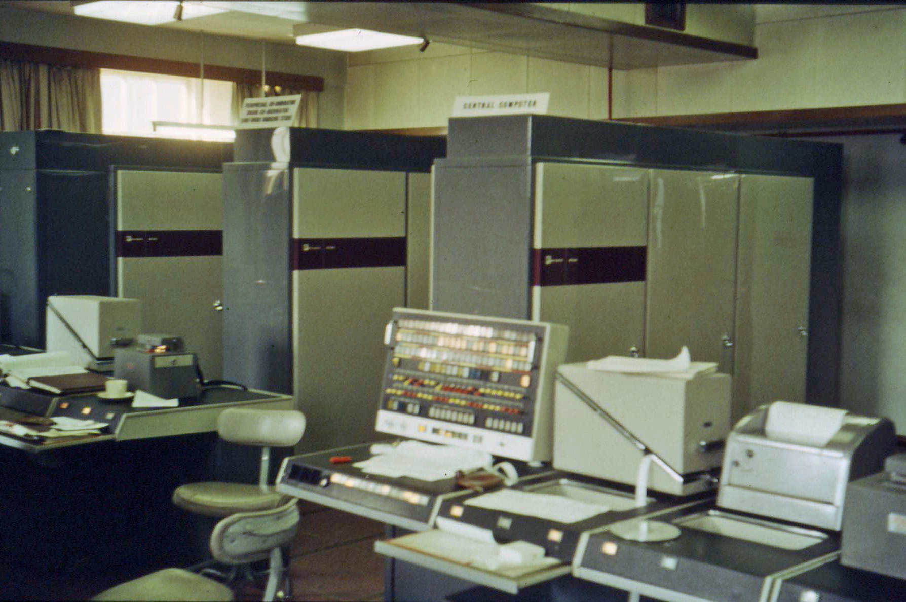

An operating system does not exist in an abstract mathematical vacuum; it is fundamentally shaped and constrained by the physical silicon it commands. At its core, the OS acts as both a resource manager and an extended virtual machine, turning raw hardware into a safe, programmable execution environment. However, software alone cannot enforce memory protection boundaries or wrest control back from an errant program—it requires direct hardware cooperation through privileged CPU execution modes, timer interrupts, Memory Management Units (MMUs), and DMA controllers. Understanding these physical hardware building blocks is the indispensable foundation for studying how operating systems virtualize the CPU and memory, coordinate concurrent threads, and persist data to non-volatile storage.
System Architecture Overview
The diagram below maps out how the core hardware subsystems covered in this module connect—from CPU execution engines and memory hierarchies down to system buses, storage controllers, and boot firmware.
1. Processors (CPUs) & Execution Mechanics
The Central Processing Unit (CPU) is the computational brain of the computer, executing instructions fetched from main memory. The CPU follows the classical fetch-decode-execute cycle:
- Fetch: Retrieve the instruction at the memory address currently designated by the Program Counter (PC).
- Decode: Interpret the operation code (opcode) to determine the instruction type and identify the required operands.
- Execute: Carry out the operation within the Arithmetic Logic Unit (ALU), manipulate data registers, and adjust processor state flags.
Interactive Walkthrough: Instruction Throughput Engine
Step through sequential vector operations across standard pipelined, superscalar, and multicore execution.
We are computing one single term of a vector dot product: sum = sum + (A × B).
Before John von Neumann formalized the stored-program architecture in his 1945 EDVAC report, early computers were programmed manually by plugging patch cables and setting physical switches. Treating code as data inside a shared memory space enabled self-loading operating systems and dynamic linkers, but it also introduced the foundational vulnerability of buffer overflows—where malicious inputs overwrite instruction pointers in memory.
When multi-core processors emerged, private L1/L2 caches created a consistency crisis: if Core 0 updated a variable, how did Core 1 know its cached copy was stale? Goodman solved this by introducing bus snooping, where cache controllers monitor the shared memory bus to automatically invalidate outdated local copies.
2. Privilege Modes & Hardware Protection
To prevent rogue or faulty user software from crashing the operating system or corrupting other programs, CPU hardware enforces distinct privilege execution levels:
- Kernel Mode (Supervisor Mode): Complete, unrestricted access to physical memory, instructions, and system configuration tables.
- User Mode: A restricted subset of instructions where direct memory access to kernel space and raw I/O instructions are strictly prohibited.
While the term "Rings" (Ring 0 through Ring 3) is famously associated with x86 architecture, the underlying concept of hierarchical hardware privilege is universal across modern processors:
| Processor Architecture | User / Application Tier | Kernel / Supervisor Tier | Virtualization / Firmware Tier |
|---|---|---|---|
| x86-64 (Intel / AMD) | Ring 3 (User applications) | Ring 0 (OS Kernel) | Ring -1 / VMX Root (Hypervisors) |
| ARM64 (AArch64) | EL0 (Apps & OS Daemons) | EL1 (OS Kernel / Supervisor) | EL2 / EL3 (Hypervisor / Secure Monitor) |
| RISC-V | U-mode (User Mode) | S-mode (Supervisor Mode) | M-mode (Machine Mode / Firmware) |
Regardless of nomenclature, the hardware state machine enforces identical safety guarantees: unprivileged instructions cannot manipulate page tables, modify control registers, or execute raw I/O without trapping through a controlled supervisor gateway.
While Intel's hardware design originally defined 4 rings—with Ring 1 intended for device drivers and Ring 2 for system services—mainstream operating systems like Linux and Windows chose to ignore them, using only Ring 0 (Kernel) and Ring 3 (User). Running drivers in Ring 1 or 2 provided little real-world security protection because a driver bug could still compromise the kernel, and managing four hardware rings added unnecessary architectural complexity.

Atlas (1962)Wikimedia Record
Author: Iain MacCallum
The University of Manchester Atlas computer (1962), led by Tom Kilburn and David Edwards, pioneered the concept that entering supervisor mode should not be an ordinary subroutine call. Instead, they invented hardware traps that simultaneously elevated processor privilege and redirected execution to immutable vector locations. Without this hardware gateway, unprivileged code could easily forge supervisor privileges.
Early time-sharing mainframes relied entirely on cooperative yields. If an errant infinite loop began running, the entire machine locked up. In 1963, John McCarthy championed the integration of a non-negotiable hardware clock interrupt (the PDP-1 channel 17 clock), ensuring the CPU would forcibly trap into the supervisor to reclaim control, making preemptive multitasking possible.
3. Virtual Memory & The Memory Management Unit (MMU)
Modern architectures decouple the addresses generated by programs from the physical addresses wired into silicon using Virtual Memory, managed directly by specialized hardware called the Memory Management Unit (MMU).
Address Translation Mechanics
The hardware MMU takes the Virtual Page Number and indexes into the active process's Page Table to discover the corresponding Physical Frame Number (PFN). The lowest 12 bits of the original address (the offset) pass through completely unmodified, because the byte offset within a virtual page is identical to the byte offset within a physical frame:
Understanding Superpages (Huge Pages)
Normally, x86-64 uses a 4-level page table hierarchy to translate standard 4 KiB pages, requiring individual memory lookups across PML4, PDPT, Page Directory, and Page Table. However, modern workloads with massive memory footprints (such as databases and hypervisors) can overwhelm the Translation Lookaside Buffer (TLB) if every 4 KiB chunk requires its own translation entry.
A superpage (or huge page) solves this by allowing the MMU to terminate the page walk early. By asserting a special Page Size (PS) bit in the Page Directory Entry (PDE) at Level 2, the hardware treats the entire 2 MiB region as a single atomic mapping, bypassing lower page tables completely and binding directly to a physical superpage frame.
Interactive Walkthrough: Synchronized Page Table Walk & Offset Pass-Through
Trace how the MMU steps through multi-level page table entries (PTEs) in DRAM in real time.
We are tracing how the MMU translates virtual address 0x00403018 into physical DRAM address 0x07B40018 across synchronized page table entries:
Wikimedia Record
Author: Wikimedia Commons
Turing Award winner Butler Lampson emphasized a core rule of operating system design: separation of policy from mechanism. The hardware provides mechanisms (like MMU page walks or timer traps), while the OS establishes policies (like scheduling algorithms or eviction rules). Mixing them leads to brittle architectures.
In his landmark 1990 paper, John Ousterhout observed that while CPU clock speeds were scaling exponentially, memory and storage bus latency lagged severely behind. This reality explains why hardware architectural breakthroughs like Translation Lookaside Buffers (TLBs), DMA controllers, and superpages are vital to preventing CPU starvation.
4. Disks, I/O Devices, & Controller Hardware
Input/output (I/O) hardware bridges the CPU and memory with the outside digital and physical world. Because physical devices (keyboards, network interfaces, NVMe drives, and displays) operate at speeds orders of magnitude slower than CPU registers and DRAM buses, computer architectures utilize a specialized hierarchy of hardware controllers and communication pathways.
The Component Hierarchy
- Physical Devices: The electromechanical or solid-state endpoints (e.g., spinning magnetic platters, NAND flash cells, LED backlights, or sensor arrays) that interact directly with the physical environment.
- Device Controllers (Adapters): Integrated circuits or expansion cards (such as a PCIe NVMe controller or USB host controller) attached to the motherboard. The controller provides an electronic hardware interface that translates low-level physical signals into structured digital registers and buffers.
- Device Drivers: Software modules running in kernel mode (Ring 0) that understand the specific register layouts, command sets, and quirks of a given controller, translating generic OS read/write requests into device-specific operations.
How I/O Communication Works
The CPU communicates with device controllers using two primary hardware mechanisms:
- Port-Mapped I/O (PMIO): The CPU uses dedicated, isolated hardware instructions (such as
inandouton x86) interacting with a separate address space specifically reserved for I/O ports. - Memory-Mapped I/O (MMIO): The controller's control and data registers are mapped directly into the system's physical address space. When the CPU writes to a specific MMIO physical address, the memory bus routes the write directly to the hardware controller's internal registers instead of DRAM.
Direct Memory Access (DMA)
To prevent the CPU from wasting valuable cycles moving large blocks of data byte-by-byte between an I/O device and DRAM, systems employ a Direct Memory Access (DMA) controller:
- Offloading Data Transfers: The CPU programs the DMA controller with source and destination addresses, byte counts, and direction flags, then issues a transfer command.
- Bus Mastership: The DMA controller takes control of the memory bus (bus mastership), reading data directly from the device controller and writing it straight into physical RAM at hardware speeds.
- Completion Interrupt: Once the entire block transfer finishes, the DMA controller asserts a hardware interrupt line to notify the CPU, eliminating software polling overhead entirely.
5. Buses & The Boot Process
Modern computers rely on a high-speed hierarchy of communication pathways known as buses to transport data, addresses, and control signals between the CPU, memory, and peripheral controllers. Following power-on, a carefully choreographed boot sequence transitions the bare silicon into a fully operational operating system.
System Bus Architecture & The PCIe Hierarchy
System bus topology has evolved from shared parallel buses (like the old PCI bus) to high-speed point-to-point serial packet interconnects:
- The Memory Bus: A high-bandwidth, low-latency channel directly connecting the CPU memory controller to physical DRAM DIMMs, operating at multi-gigahertz clock rates.
- PCI Express (PCIe): The ubiquitous high-speed serial expansion bus used for graphics cards, NVMe storage controllers, and high-performance network interfaces. PCIe organizes lanes into bidirectional differential pairs (x1, x4, x8, x16) supporting packetized transactions and Direct Memory Access.
- Low-Pin-Count (LPC) / SPI Bus: Lower-bandwidth serial buses dedicated to legacy peripherals, Trusted Platform Modules (TPM), and the system's flash storage chip containing UEFI firmware.
The Boot Process: From Power-On to Operating System Handoff
When a computer is powered on, the CPU has no operating system loaded, RAM is uninitialized, and registers contain undefined values. The system initializes through distinct sequential stages:
-
Power-On Reset & The Reset Vector:
The motherboard chipset asserts a reset signal. Upon deassertion, the CPU forces its Program Counter (PC) to a hardwired architectural address known as the Reset Vector (e.g.,
0xFFFFFFF0in legacy x86 or mapped ROM addresses in modern UEFI). At this exact location sits the CPU's first instruction: a jump to the motherboard flash ROM. - Firmware Initialization (UEFI / BIOS): The CPU executes the Extensible Firmware Interface (UEFI) stored in non-volatile flash memory. The firmware performs the Power-On Self-Test (POST), initializes memory controllers, trains DRAM timing parameters, and discovers attached hardware devices.
-
Device Discovery & Boot Selection:
The UEFI firmware scans storage volumes for a valid EFI System Partition (ESP) containing signed bootloader binaries (e.g.,
EFI/BOOT/BOOTX64.EFI) according to stored NVRAM boot variables. - The Bootloader Handoff: The primary bootloader (such as GRUB or the Windows Boot Manager) loads the operating system kernel image and initial RAM disk (initrd/initramfs) into physical RAM.
-
Entering Protected / Long Mode & Kernel Entry:
The bootloader transitions the CPU from 16-bit real mode into 64-bit Long Mode, enables paging and the MMU by loading the root register (CR3), and jumps directly into the kernel's entry point (`kernel_main`). The OS initializes driver subsystems, spawns the first user-space process (
initorsystemd), and presents the user login environment.